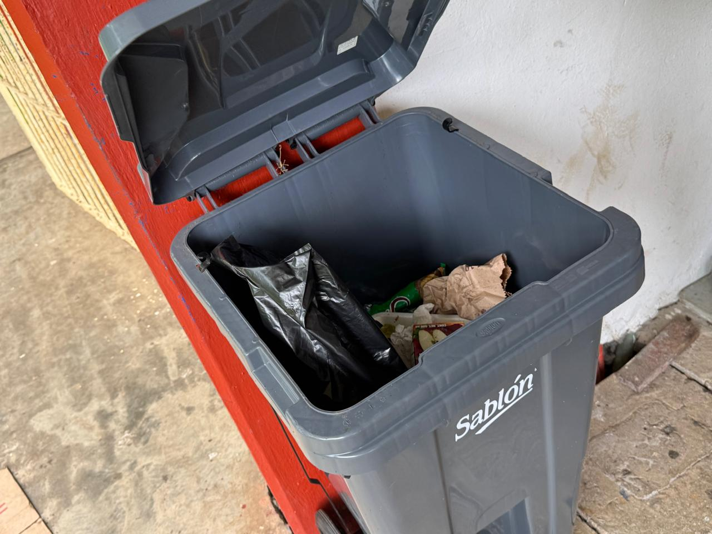
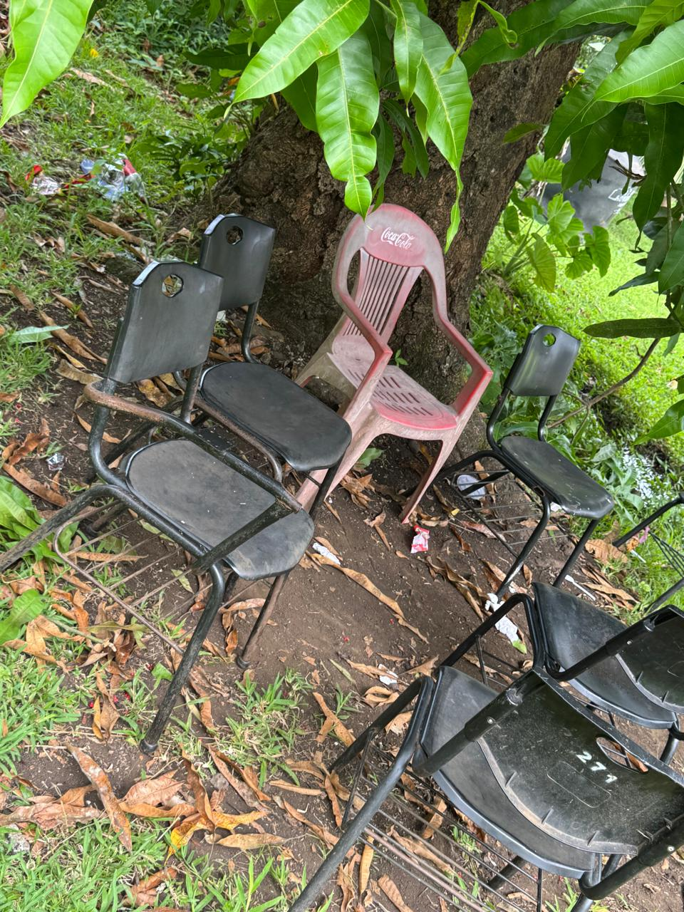
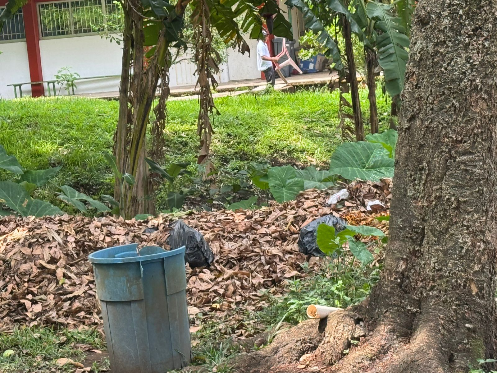
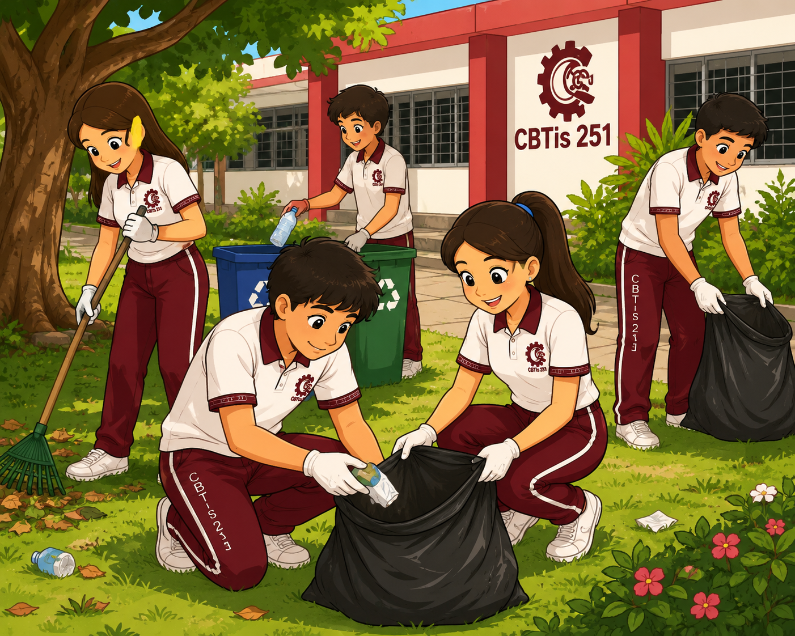
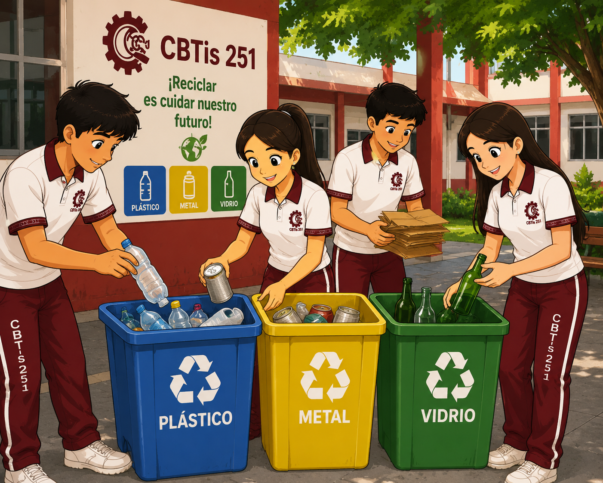
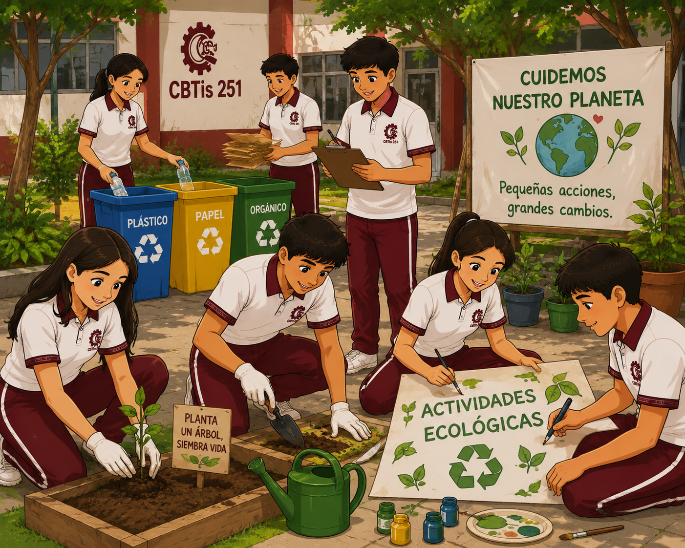

Proyecto de concientización ambiental en el CBTis 251
La limpieza escolar es una responsabilidad compartida entre estudiantes, docentes y personal educativo. Mantener los espacios limpios favorece un ambiente agradable para el aprendizaje, mejora la imagen institucional y contribuye al cuidado del medio ambiente. Este proyecto tiene como finalidad crear conciencia sobre la importancia de conservar limpio el CBTis 251 y fomentar acciones responsables que ayuden a reducir la contaminación dentro de la institución.
Dentro de algunas instituciones educativas, incluyendo el CBTis 251, pueden presentarse situaciones como la acumulación de basura en patios, pasillos y áreas verdes, así como el uso excesivo de materiales desechables y la falta de separación de residuos. Estas acciones generan contaminación visual, afectan la convivencia escolar y pueden ocasionar problemas de higiene. Además, reflejan la necesidad de fortalecer la conciencia ambiental entre estudiantes, docentes y personal de la institución.



Observa el siguiente video para reflexionar sobre la importancia de cuidar nuestro entorno y asumir la responsabilidad de mantener limpios los espacios que compartimos diariamente.



La educación ambiental permite comprender cómo nuestras acciones impactan el entorno. Este video complementa la información presentada en el proyecto.
Mantener limpio el CBTis 251 es una tarea que requiere la participación de toda la comunidad escolar. Pequeñas acciones, como depositar la basura en su lugar, reciclar materiales y cuidar las áreas verdes, pueden generar grandes cambios. Una escuela limpia refleja respeto, responsabilidad y compromiso con el medio ambiente. Trabajando juntos podemos construir un espacio más saludable, agradable y digno para todos.